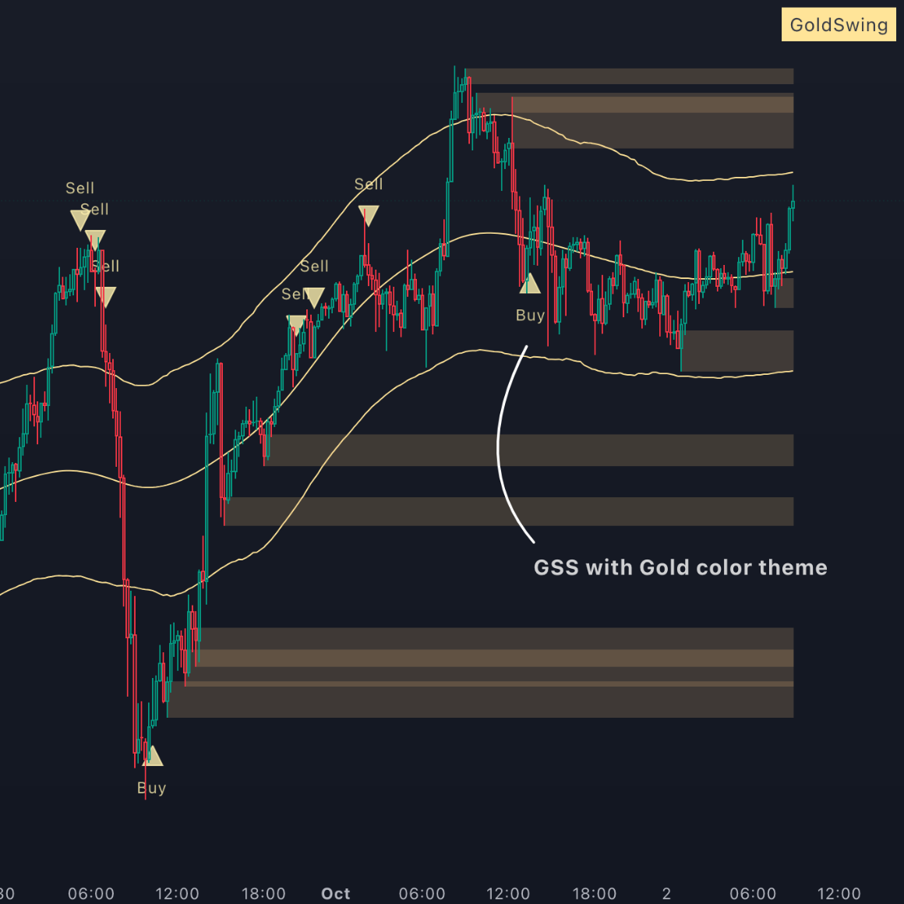
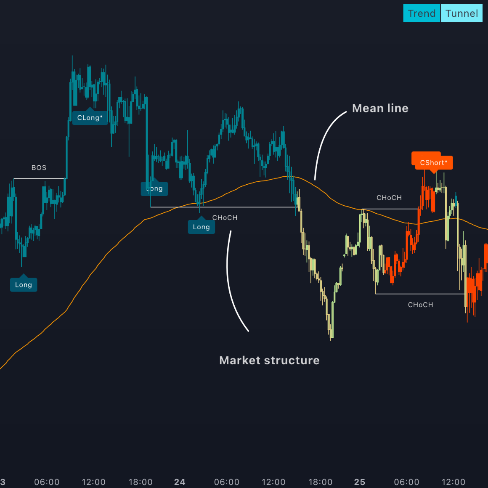

-
01
เปิดคู่มือภาพก่อนเริ่ม
ดูภาพรวม 4 ขั้น แล้วแตะภาพย่อยเพื่อขยายอ่านทีละภาพได้
-
02
เลือกเครื่องมือผ่านช่องทางไอริส
ใช้ปุ่มนี้เท่านั้น เพื่อให้บัญชี Algo Prime และการซื้อเครื่องมือเชื่อมกับการดูแลของไอริสตั้งแต่ต้น
พร้อมเลือกเครื่องมือกับไอริส -
03
ติดตั้งแล้วส่งข้อมูลที่จำเป็น
เมื่อติดตั้งเรียบร้อย กรอกแบบฟอร์มหลังบ้านเพื่อให้ไอริสรับข้อมูลและช่วยดูแลต่อ
ส่งข้อมูลหลังติดตั้ง ส่งเฉพาะข้อมูลที่แบบฟอร์มร้องขอ ห้ามส่งรหัสผ่าน OTP หรือข้อมูลบัตรให้บุคคลอื่น
05 / ALGO PRIME TOOLS
เลือกเครื่องมือให้ตรงกับสไตล์เทรด
ดูชุดเครื่องมือ ราคา และแนวทางเลือกแบบแยกหน้า เพื่อให้โฟกัสกับเครื่องมือโดยไม่ต้องเลื่อนผ่านเนื้อหาอื่น
05 / Algo Prime Tool Path
เลือกเครื่องมือให้ตรงกับสไตล์เทรด
เลือกชุดเครื่องมือให้เหมาะกับสไตล์เทรด พร้อมดูราคาและขั้นตอนต่อได้ในที่เดียว
อยากวางระบบให้ชัด เริ่มจากแพ็กเกจที่ครบกว่า
เครื่องมือฟรีใช้ทำความเข้าใจได้ แต่การฝึกให้เห็นภาพควรมีชุดหลักที่ชัดเจน ไอริสแนะนำรอบ 4 เดือนขึ้นไปหรือรายปี เพราะการฝึกต้องใช้เวลามากกว่าการเปิดดูไม่กี่วัน


ชุดหลักครบกว่า
แนะนำเริ่ม 4 เดือนขึ้นไป
GSS / TTS Full Package
รายเดือน$285
ราย 4 เดือน$685
รายปีดูในหน้าซื้อ
เหมาะกับคนที่อยากวางระบบจริงจัง ใช้ได้ทั้งมุมทองคำและเทรนด์ ไม่ต้องแยกซื้อหลายชิ้นตั้งแต่แรก
แพ็กหลักสำหรับคนที่อยากมีเครื่องมือหลายมุมในชุดเดียว เหมาะกับการฝึกจริงมากกว่าการลองแบบกระจัดกระจาย
ระดับความพร้อม
เมื่อต้องการซื้อ ให้เข้าผ่านปุ่มนี้เท่านั้น เพื่อให้บัญชีและคำสั่งซื้อเชื่อมกับไอริสอย่างถูกต้อง
เหมาะกับคนที่พร้อมฝึกต่อเนื่องและยอมเรียนรู้การอ่านโครงสร้างควบคู่กับ Risk
ระบบที่ดูแล / ภาพรวม
พัฒนาทักษะอย่างต่อเนื่อง
เลือกดูว่าแต่ละส่วนทำหน้าที่อะไร แล้วค่อยตัดสินใจจากความพร้อมจริงของคุณ
01 / STRUCTURED LEARNING
คลาสเรียนที่ช่วยให้คุณเห็นภาพทั้งระบบ
เรียนตั้งแต่พื้นฐาน การอ่านกราฟ การวางแผน ความเสี่ยง และจิตวิทยาการเทรด เป้าหมายไม่ใช่ทำให้คุณจำสูตร แต่ทำให้คุณรู้ว่ากำลังตัดสินใจอะไรอยู่
- เรียนรู้เป็นลำดับ ไม่กระโดดข้ามพื้นฐาน
- เข้าใจ Risk Management ควบคู่กับการอ่านกราฟ
- เน้นการคิดและนำไปฝึกต่อได้จริง
ถ้าคุณสนใจเส้นทางนี้ ไอริสจะพาดูรายละเอียดก่อนเริ่มเรียนจริงอีกครั้ง
TALK WITH IRIS
พูดคุยและสอบถามได้โดยตรง
ส่งคำถามทาง LINE แล้วค่อยเลือกขั้นตอนที่เหมาะกับคุณ